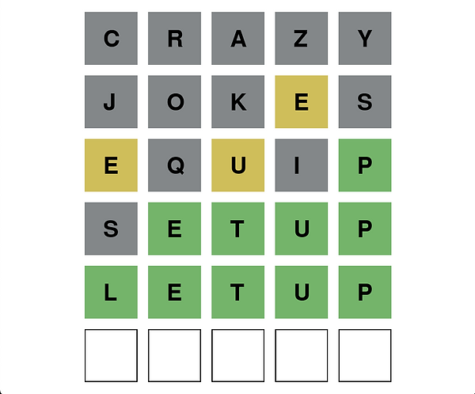

A REPRODUCTION of the world's famous game Wordle.
Challenge: Make a reproduction of Wordle that has the same user experience.
Tools: Python and PyCharm
Team: Joshua Fried (solo project)
 The user has 6 attempts to guess a random 5 letter word that is chosen from the word list. Users can only guess words that are in the word bank. With every guess the letters turn green, yellow, or gray.
Green means that the letter is in the answer word and the letter is in that position.
Yellow means the the letter is in the answer word, but not in that position.
Gray means that the letter is not in the answer word.
The user tries to guess the answer word in the least attempts possible. If the user fails to guess the word in 6 attempts then they lose. My version choses a new word every time the program is launched instead of every day.